Journal
6월 5일, 2025년 in Seoul
후 불면증이 다시 심해질 것 같은 불안한 예감이 든다. 이제 멜라토닌도 효과가 없다. 짜증이 최고조다. 기껏해봐야 두 세시간 자고 다시 두 세시간을 뒤척인다. 해야할건 많은데 2025년 상반기가 끝나가도록 제대로 끝낸 것이 없다는 생각이 부담이 되어서 짓누르는 것 같다. 유월 말 정도에는 방콕을 가야겠다. 민지 언니가 몸만 오라고 했다. 건강도 챙기고, 성찰의 시간도 좀 갖고 해야겠다. early warning system ai application에 대한 구체적인 계획도 세워야한다. 방콕, 디씨, 카이로, 홍콩.
Event-based survaillance EIOS
Early warning system list up 하기.
Pitching events/accerlerators list up 하기.
Engineering course catch up 하기.
Check in with Arafat…!
하루 at least 30분 독서하기.
러닝 및 명상
11일 오전 수현 zoom. Hmm, what to expect?
5월 31일, 2025년 in Seoul
언바운드랩(Unboundlab)은 인공지능(AI) 기반 기술 스타트업을 발굴하고 육성하는 액셀러레이팅 캐피털 펀드.
투자 분야: AI 알고리즘, 코딩 엔진, B2C 커머스, 소셜 플랫폼, 미디어 콘텐츠, 데이터 솔루션 및 마케팅 등 다양한 분야의 극초기 스타트업에 투자
조용민 대표: 액센츄어, IBM, 삼성전자, 구글코리아 등에서 다양한 기업의 비즈니스 지원을 담당한 경험을 바탕으로, 창업가와 개발자 중심의 지원을 강조.
주요 경력:
- 삼성전자 미래전략실
- IBM 마케팅팀
- Accenture 전략컨설팅 그룹
- 구글코리아 플랫폼사업부 매니저 및 글로벌비즈니스팀 부장
- 연세대학교 공과대학 겸임교수
- 삼성 청년 SW 아카데미(SSAFY) 대표 멘토
- 사랑의 열매 아너 소사이어티 재단 자문위원
학력:
- 연세대학교 전자공학과 학사
- 스탠퍼드대학교 경영대학원 조직행동론 석사
5월 30일, 2025년 in Seoul
- 오랜만에 용선 쌤을 만났다. 이집트 여행유튜브를 보면서 내가 사고는 치고 다니지 않을지, 구치장에 갇히지는 않았을지 걱정하셨다고 했다. 용선쌤은 걱정도 창의적이다. 하지만 애정이 담겨있는 농담임을 안다. 어느새 머리가 더 하얘지고 기운이 조금 꺽인 용선 쌤을 보니 마음이 서운해졌다. 용선 쌤 화로의 장작들이 젖어가는 것 같아서 아쉽고, 또 시간을 더 내어 자주 찾아뵈어야겠다는 생각이 든다. 푸코 세미나에 참여하고 싶다고 하니 나같은 불성실한 학생은 받을 수 없다고 하신다. 요즘 권태로움을 자주 느낀다고 했더니 너무 성실하게 살아서 그렇다고 하신다. 여전히 타협되지 않는 여러 말들을 조각조각 말해주신다. 나도 조각라이팅에 익숙해져서인지 단편 단편에서 진심이 느껴지는것 같다?
5월 30일, 2025년 in Seoul
- 민지언니는 내가 너무 과하단다. 머리, 안경, 양말, 구두를 포기하라고 한다. 그러면 더 많은? 상대에게 이성적 어필 할 수 있다고 한다. 하지만 첫째, 나는 더 많은 사람에게 어필하는 것이 목표가 아니다. 어차피 내 감성을 편하게 표현하지 못할 사람이라면 데이트는 커녕 친구로도 남고 싶지 않을 것이다. 둘째, 머리, 안경, 양말, 구두가 스크리닝 장치가 될 수 있다면 완전 이득 아닌가. 나는 어차피 hetronormative한 performance를 꾸준히 하기에는 너무 멀리와버렸다. 나와 비슷하게 멀리 와버린 사람만 들어오라고하면…? 그럼 또 우리는 echo chamber에 갇히게 되는 것인가? echo chamber에 갇히는 건 잘못된건가? 경도된 건가? 아님 가치를 지키는 건가? 뭐지?
5월 25일, 2025년 in Seoul
- 타투 도안. 보이지 않는 곳에 할 것. e.g., 등, 엉덩이, 허벅지, 팔 뒤꿈치. 그래야 질리지 않는다. 시원이 맡기로 함.
- 건강을 위한 하루 한시간 계획. 집 뒤 안산 입구 부터 연대 북문까지 대략 40분 소요.
- 바우하우스? 너가 나를 보면 바우하우스가 생각난다고? 그 의미를 가늠할 수 없어서 gpt에 물어봤다. 상당히 좋은 뚯이었어.
” - 다학제적·융합적 사고의 구현자 바우하우스는 건축·공예·회화·그래픽·산업디자인 등 전통적으로 분리된 여러 예술과 기술 분야를 ’총체적 디자인(Gesamtkunstwerk)’이라는 개념 아래 통합하려 한 학교였습니다. 누군가를 “인간 바우하우스”라고 부른다는 것은, 마치 살아 있는 바우하우스처럼 한 사람이 여러 영역을 넘나들며 창의적으로 사고·작업한다는 찬사인 셈입니다.
- 형태와 기능의 결합, 그리고 실용성 중시 바우하우스는 “형태는 기능을 따른다(Form follows function)”는 원칙을 내세워, 장식성보다 실용적 효용과 기계 생산 방식을 강조했습니다. 따라서 “인간 바우하우스”는 단순히 예술적 재능이 뛰어날 뿐 아니라, 그 결과물이 실제로 유용하고 체계적인 가치가 있음을 뜻하기도 합니다.
정리하자면, “인간 바우하우스”라는 표현은
- 여러 분야를 넘나들며 융합적인 시각으로 문제를 보고 해결하는 사람
- 예술적 감수성과 동시에 실용적·기능적 가치를 함께 구현하는 사람
을 의미하는 비유적 칭찬입니다. 이런 맥락에서, 누군가가 당신을 “인간 바우하우스”라고 말한 것은 곧 당신이 다재다능한 크리에이터이자 실용적 혁신가로서 타고난 능력을 지녔다는 뜻이라고 할 수 있습니다.”
한편 너가 말한 디터 람스는 시기적으로 바우하우스 이후에 활동한 디자이너더라. 바우하우스의 영향을 받았다고 할 수 있겠지. 람스는 1947년부터 바이스바덴 예술학교(Wiesbaden School of Art)에서 건축·인테리어 디자인을 공부했다는데, 이 시기에 독일 전역에 퍼져 있던 바우하우스 운동의 ‘형태는 기능을 따른다(Form follows function)’ 원칙이 그의 디자인 철학 형성에 결정적 영향을 주었단다. 그니까 지유하자면 바우하우스는 3대 연예기획사이고 람스는 케이팝 스타 정도이려나…
또 다른 한편, 요즘 나는 관계의 휘발성에 대해 생각한다. 사람이 가벼운게 아니라 관계가 가벼운 것 같다. 좋은 사람 같은데, 그렇다해도 그 사람과의 관계를 가꾸기 위해서 들여야하는 수고로움의 크기가 작은 것은 아니다. 왜냐하면 모두 각자의 bag of bones가 있기 때문이다. 마치 내가 조심하며 살았지만 누가 기어코 등에 칼을 꽂은 것처럼 involuntary한 상황들에서 겪게되는 트라우마들이 있거든. 물론, 베이스라인이 괜찮은 사람이면 들여햐하는 수고로움이 분명 경감되겠지만. 그럼에도 불구하고 투자해야하는 시간, 노력, 기울여하는 관심의 절대적 최소한은 언제나 내 기대치 보다는 높았어서. 나는 어느 세월에 안전한 관계와 신뢰의 공간을 다시 구축할 수 있을까.
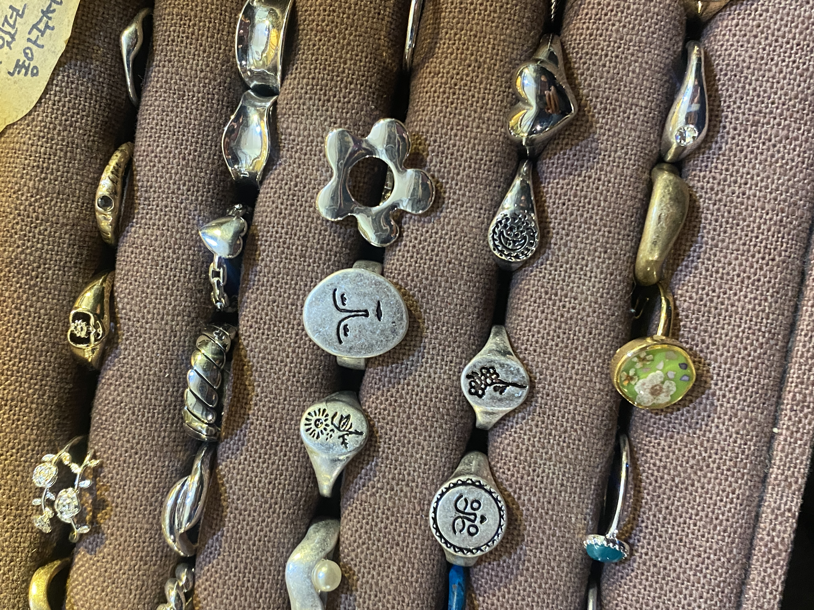
5월 16일, 2025년 in Seoul
- 내 삶에 대해 사보타지 한다는 마음으로, 모든게 다 망해버렸으면 좋겠다는 반항하는 마음으로 산지 반년정도 된것 같다. 설레는 일이 이제 다시는 없을 줄 알았는데 역시, 죽으란 법은 없고 사람은 망각의 동물이라는 클리셰가 실체가 있었음을 인정한다. 나는 지금 일과 관계 모두에서 설레는 마음이 인다.
5월 8일, 2025년 in Cairo
나는 민지 언니가 너무 좋다. 옳고 그름에 대해서 꼰대같을 정도로 대쪽같이 확신을 주는 그 태도가 내가 서있는 반석이다. 민지언니는 내가 어지러워도 베고 누울 수 있는 단단한 바위다. 민지 언니가 부디 아프지 않고 오래 살았으면 좋겠다. 이럴 수도 있고 저럴 수도 있다는 마음가짐으로 살면 이럴 수도 있고 저럴 수도 있는 결과밖에 얻지 못한다고 언니가 말했다.
Dorky me, NIA 디지털 정부 해외컨설턴트 경력자 과정
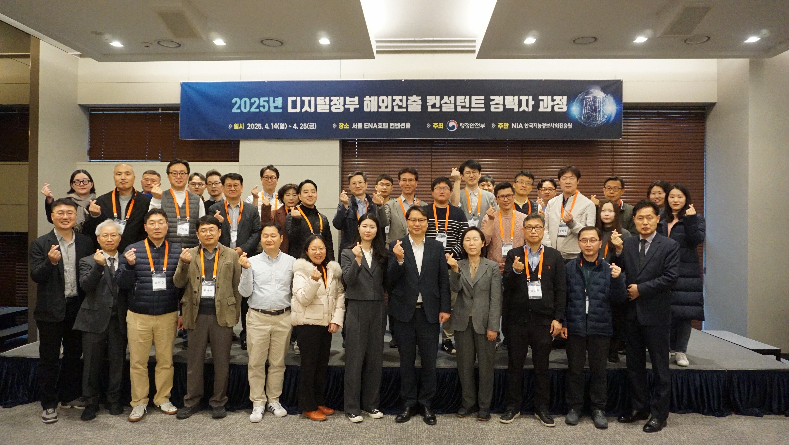 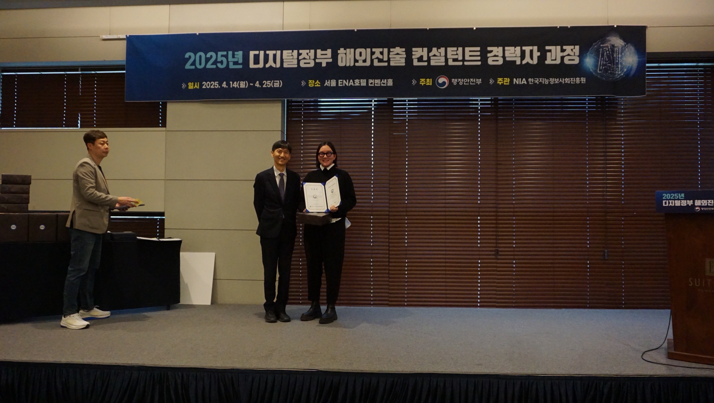 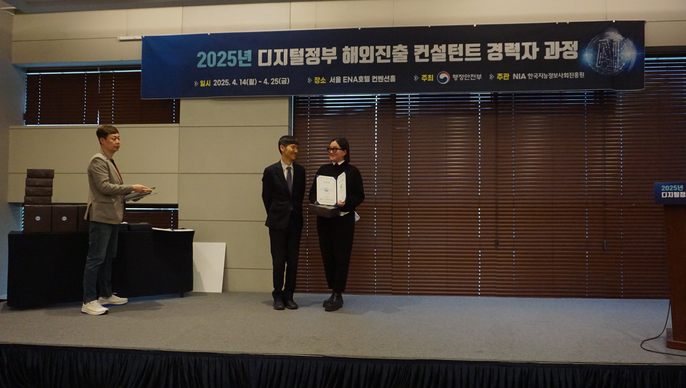 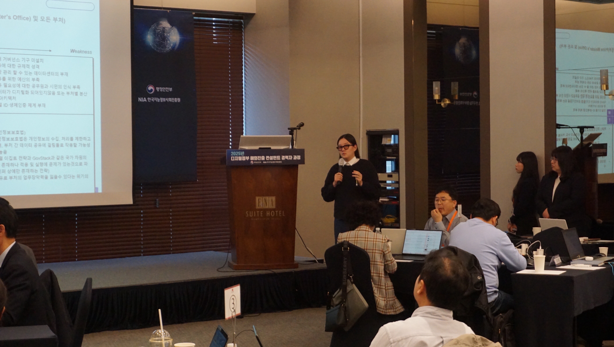
5 월 5일, 2025년 in Cairo
AI Capacity Building Workshop Day 1을 드디어 마쳤다. 역시 사람들과 소통하면서 의견을 듣고 내가 아는 것을 공유하는 일은 보람되고 보람되고 보람되다.
이제 드디어 일주일 뒤면 카이로를 떠난다. 시간이 영겁같이 끝나지 않을 것 같더니 끝은 이렇게 또 갑작스럽게 온다. 하루하루가 소중해져서 동네 산책을 매일 나간다.
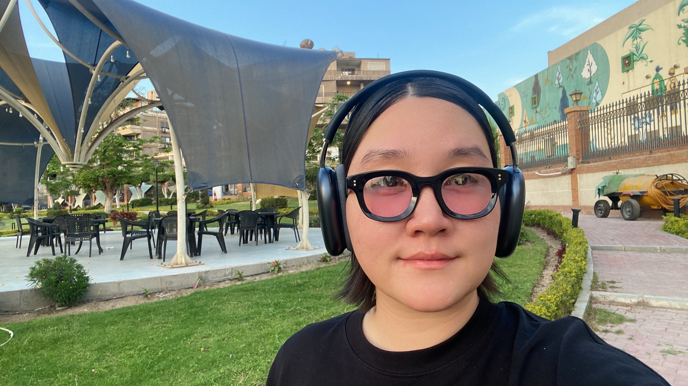 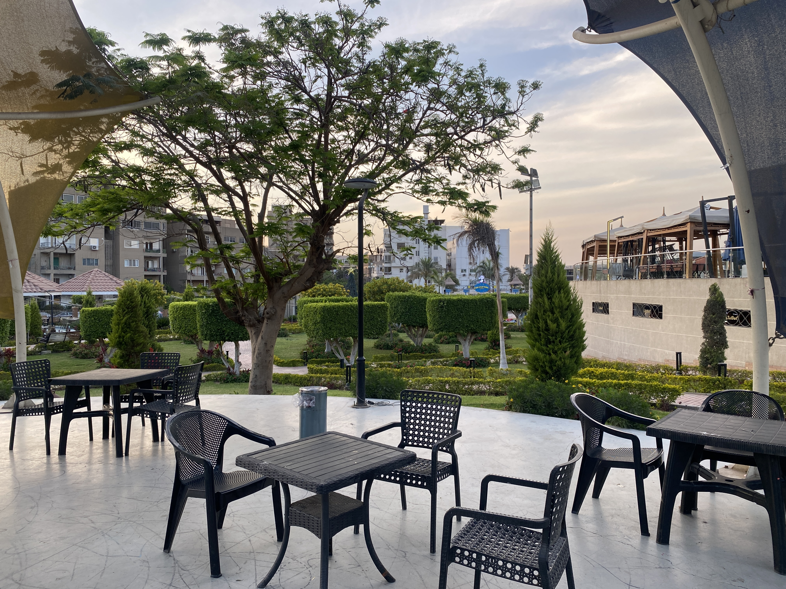 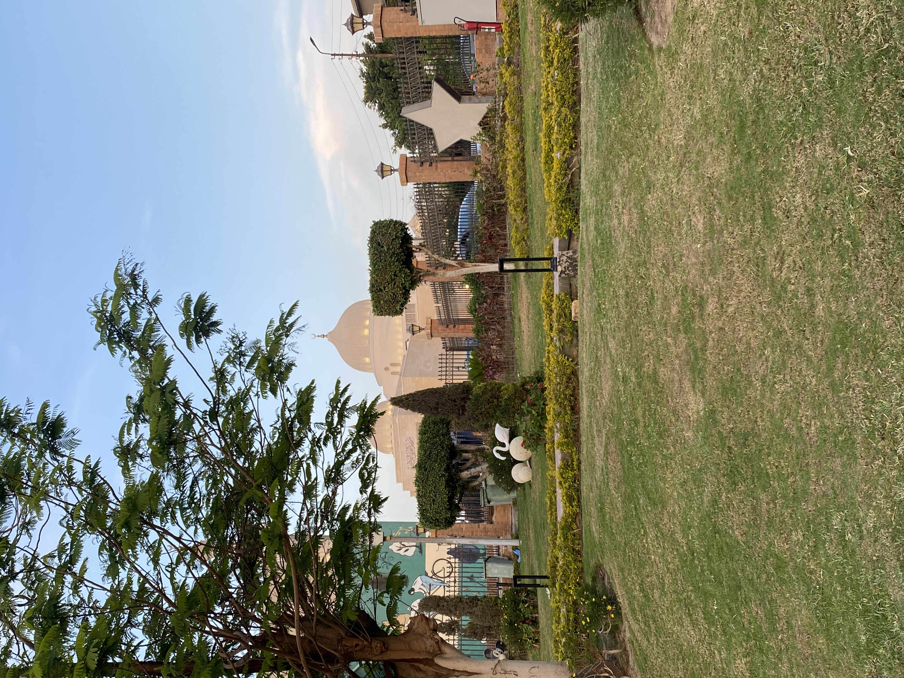 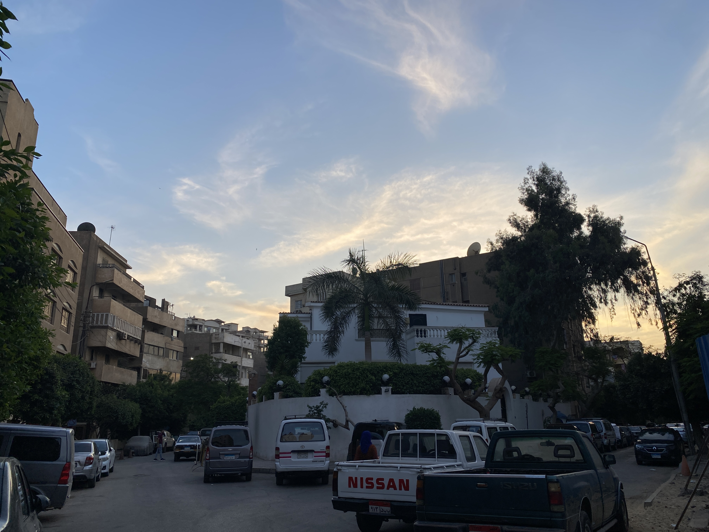 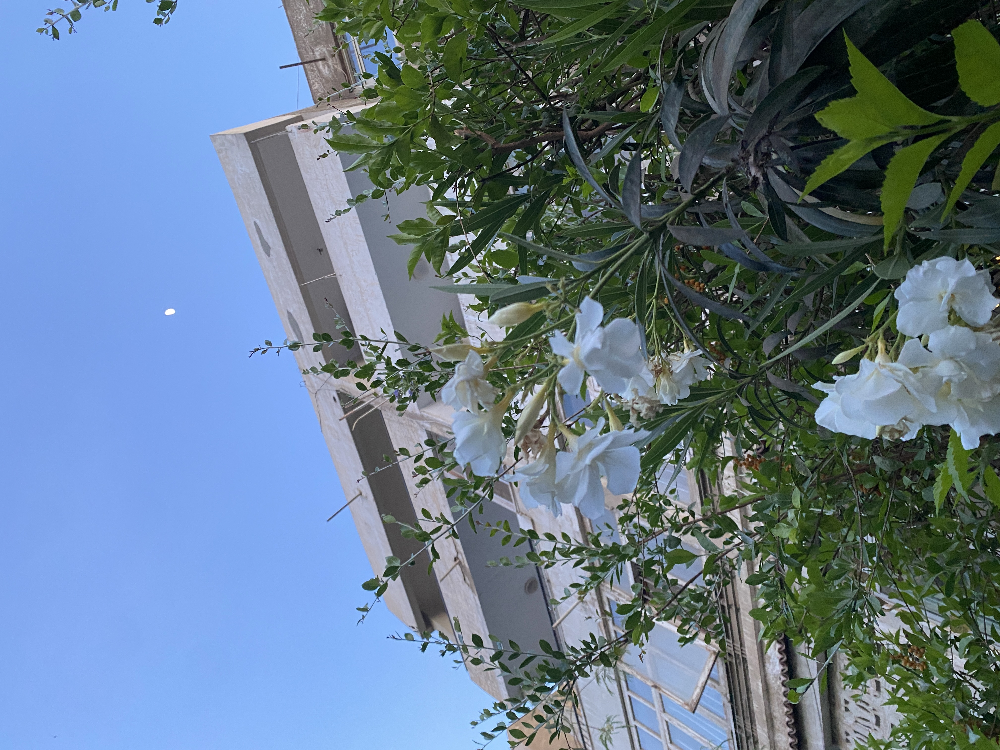 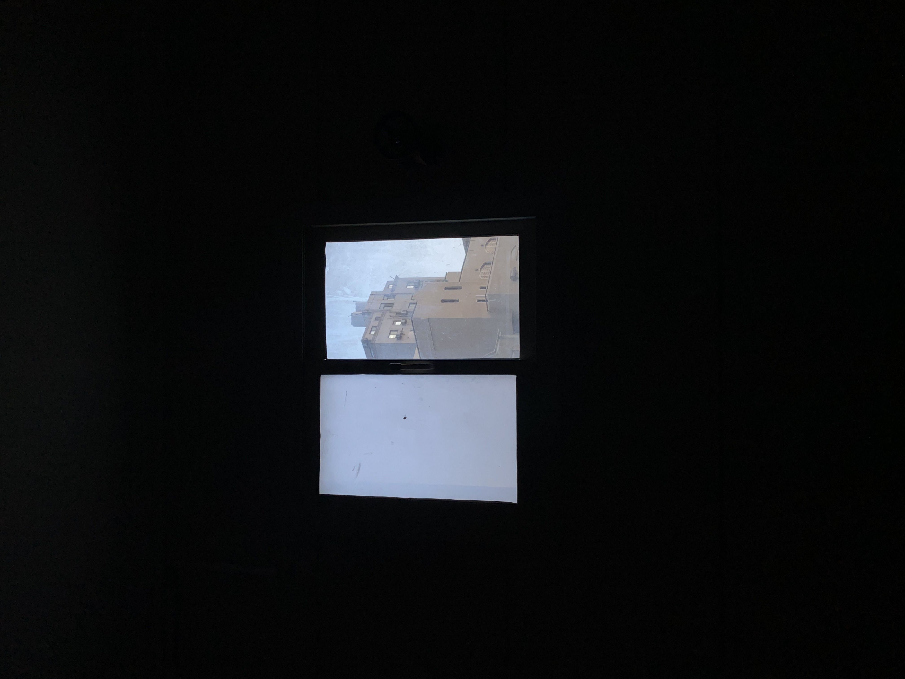 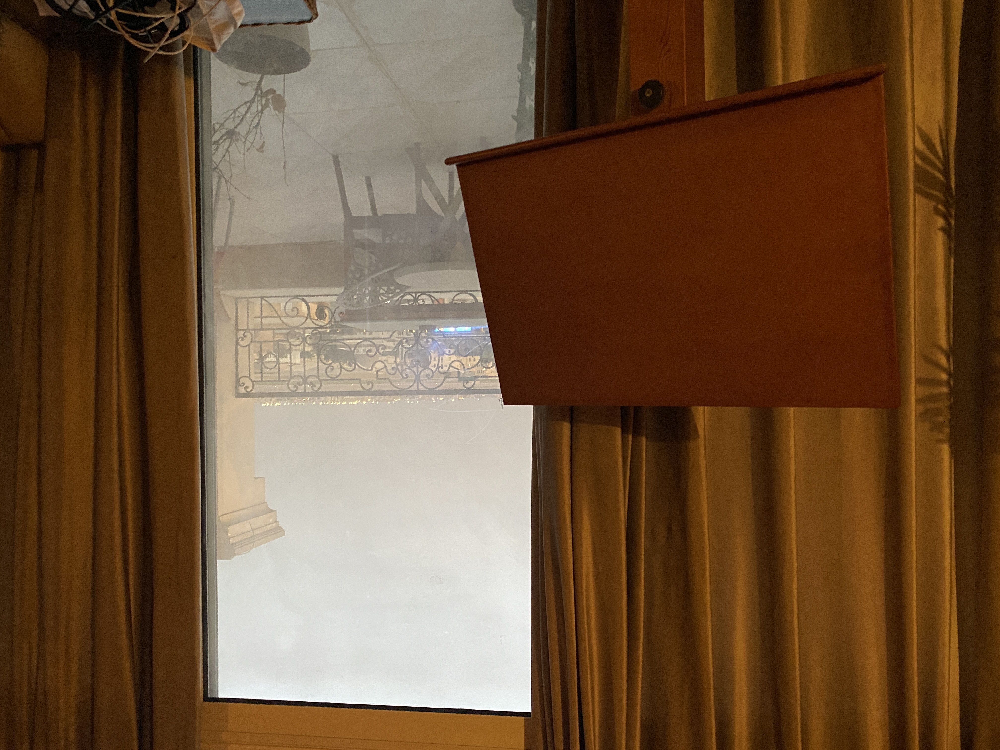
4월 29일, 2025년 in Shanghai
- 한국을 떠나려니 부모님, 할머니, 이모, 고모들이 눈에 밟힌다. 만날 때 마다 나이가 들어있는데. 1년에 한 번 만난다쳐도 이제 스무번이나 더 만날 수 있을지. 양 할머니는 올해가 마지막일지도 모른다는 생각이 든다.
4월 23일, 2025년 in Seoul
- 꽤 오랜시간 끊임없이 투자를 했다고 생각하는데 아직도 세상은 넓고 배워야할 것은 많다.
- 전문성을 갖는다는건 장벽을 쌓는것이 아니라, 어떤 조류에든 뜰수 있는 배를 만드는 것?
- 사람을 만나기 위해선 한국, 적어도 아시아에 locate 해야겠나?
4월 21일, 2025년 in Seoul
“하나님 말씀과 부처님 말씀, 그리고 한국”
오랜만에 다시 찾은 한국은 역시나 복잡하다. 어딜가든지 사람들이 꽉꽉 들어차있고 그 사이를 양해를 구하며 비집고 다니기에는 내가 너무 shy하다.
한국에만 오면 드는 양가적인 감정이란:
이곳의 가족, 친구들, 그리고 나에게 위안을 주는 장소들.
목적 의식이 있는지 없는지 모르겠지만 너무 바쁘게 돌아가는 사회.
1번에서 얻는 위로는 딱 며칠을 간다. 2번에서 느끼는 압박감은 그보다 훨씬 더 길게 간다.
그래서인지 이집트에서도 없었던 불면증이 다시 도졌다. 내가 악몽을 꾸면서 헛소리도 해댄댄다.
교보문고에 ‣숫타니파타 마음공부 라는 책이 있더라. 대충 쓱 보니 “포기하라” “집착하지마라” “욕망의 크기를 줄여라”라는 말 뿐이다. 퍼뜩 든 생각은 ’그럴바엔 불안하고 말겠다’는 거다. 나는 나의 욕망을 온전히 긍정하면서도 마음의 평안을 얻고 싶은거지 욕망을 포기하고 싶은게 아니다. 부처님 말씀이 도저히 심정적으로 받아들여지지 않는다.
반면에 하나님 말씀은 상당히 위로가 된다. 하나님은 욕망을 줄이라고 하지 않는다. “구하면 주실것”이라고 한다. 내가 불안한 이유는 믿음이 부족하기 때문이란다. 확실히 기독교 윤리는 자본주의 정신과 상통하는 면이 있는게다.